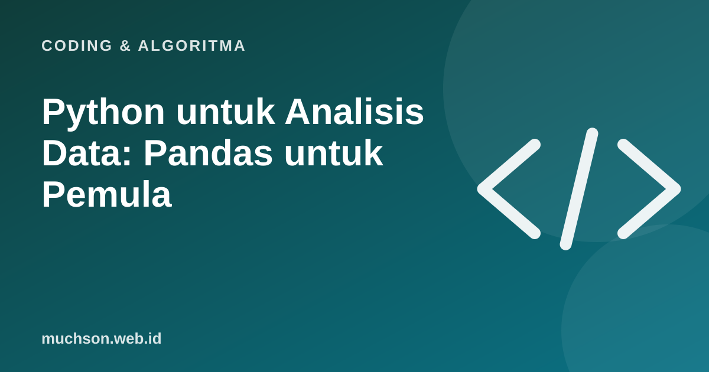

Beranda › Artikel › Coding & Algoritma
Coding & AlgoritmaPython untuk Analisis Data: Pandas untuk Pemula
Jika pekerjaan Anda melibatkan Excel berulang setiap minggu, menggabungkan file, menyaring baris, membuat ringkasan, Python dengan pustaka pandas bisa menghemat banyak jam. Sekali skrip dibuat, laporan berikutnya cukup dijalankan ulang. Artikel ini memandu langkah pertamanya dengan contoh data penjualan.

Persiapan
pip install pandas openpyxl
# openpyxl dibutuhkan untuk membaca dan menulis berkas .xlsxBila tidak ingin memasang apa pun, Anda bisa mencoba di layanan notebook daring seperti Google Colab.
Membaca data
import pandas as pd
df = pd.read_excel("penjualan.xlsx") # atau pd.read_csv("penjualan.csv")
print(df.head()) # 5 baris pertama
print(df.shape) # (jumlah baris, jumlah kolom)
df.info() # tipe data dan nilai kosong per kolomMisalkan datanya berisi kolom: tanggal, cabang, produk, qty, harga.
Memilih dan menyaring
# kolom tertentu
df[["produk", "qty"]]
# baris dengan syarat
df[df["cabang"] == "Malang"]
df[(df["qty"] >= 10) & (df["cabang"] != "Madiun")]
# kolom baru
df["omzet"] = df["qty"] * df["harga"]Jebakan umum
Di pandas, gabungan syarat memakai & (dan) serta | (atau), dan setiap syarat dibungkus tanda kurung. Kata and/or Python biasa tidak bekerja di sini.
Mengelompokkan dan meringkas
ringkas = (
df.groupby("cabang")
.agg(total_omzet=("omzet", "sum"),
transaksi=("omzet", "count"),
rata_qty=("qty", "mean"))
.sort_values("total_omzet", ascending=False)
)
print(ringkas)
# tabel pivot: cabang x produk
pivot = df.pivot_table(index="cabang", columns="produk", values="omzet", aggfunc="sum", fill_value=0)Membersihkan data kotor
| Masalah | Solusi pandas |
|---|---|
| Nilai kosong | df.dropna() atau df["qty"].fillna(0) |
| Baris ganda | df.drop_duplicates() |
| Spasi dan huruf tidak seragam | df["cabang"].str.strip().str.title() |
| Tanggal terbaca sebagai teks | pd.to_datetime(df["tanggal"], dayfirst=True) |
| Angka berformat "Rp1.250.000" | df["harga"].str.replace(r"[^0-9]", "", regex=True).astype(int) |
Menyimpan laporan
with pd.ExcelWriter("laporan_mingguan.xlsx") as w:
ringkas.to_excel(w, sheet_name="Per cabang")
pivot.to_excel(w, sheet_name="Cabang x produk")
print("Laporan selesai")Seberapa banyak waktu yang dihemat?
Langkah berikutnya
Tanya jawab
Apa itu pandas?
Pustaka Python untuk mengolah data tabel, mirip Excel tetapi bisa diotomatiskan dengan kode.
Apakah pandas bisa membaca file Excel?
Bisa, dengan pd.read_excel. Pasang juga pustaka openpyxl untuk berkas .xlsx.
Perlu belajar Python dasar dulu?
Ya, minimal variabel, list, dan fungsi. Setelah itu pandas bisa dipelajari sambil mengolah data nyata.
Pandas atau Excel?
Excel bagus untuk eksplorasi cepat. Pandas unggul untuk tugas berulang, data besar, dan proses yang perlu dicatat dan diulang.